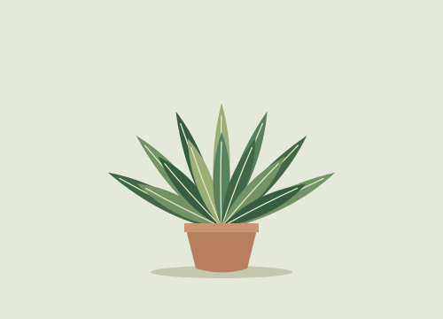
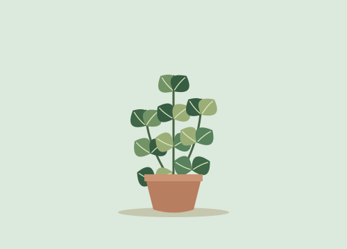
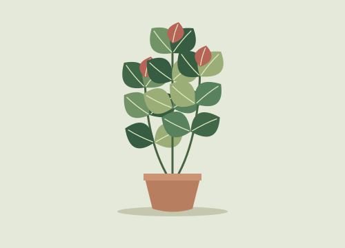
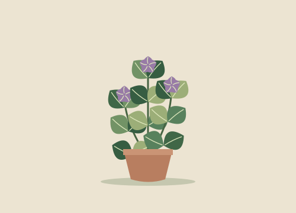

Лиственные / образец 01
Фикус эластика
Крупные плотные листья с глянцевой поверхностью.
| Вид | Ficus elastica |
|---|---|
| Свет | Яркий рассеянный |
| Высота | 55–65 см |
2490 ₽
Ботанический атлас
Свет, размер и ботаническое название каждого вида.
Лиственные / образец 01
Крупные плотные листья с глянцевой поверхностью.
| Вид | Ficus elastica |
|---|---|
| Свет | Яркий рассеянный |
| Высота | 55–65 см |
2490 ₽

Лиственные / образец 02
Перистые вайи образуют воздушную зелёную розетку.
| Вид | Nephrolepis exaltata |
|---|---|
| Свет | Рассеянный |
| Высота | 30–40 см |
1490 ₽

Лиственные / образец 03
Вьющиеся побеги для полки или подвесного кашпо.
| Вид | Epipremnum aureum |
|---|---|
| Свет | Рассеянный |
| Высота | 25–35 см |
1190 ₽

Суккуленты / образец 04
Мясистые остроконечные листья собраны в розетку.
| Вид | Aloe vera |
|---|---|
| Свет | Яркий |
| Высота | 20–25 см |
990 ₽

Суккуленты / образец 05
Компактная сизая розетка для солнечного подоконника.
| Вид | Echeveria elegans |
|---|---|
| Свет | Яркий |
| Высота | 8–12 см |
790 ₽

Суккуленты / образец 06
Округлые листья и ветвящиеся побеги на коротком стволе.
| Вид | Crassula ovata |
|---|---|
| Свет | Яркий |
| Высота | 20–30 см |
1090 ₽

Цветущие / образец 07
Тёмная листва оттеняет яркие сердцевидные покрывала.
| Вид | Anthurium andraeanum |
|---|---|
| Свет | Яркий рассеянный |
| Высота | 35–45 см |
2290 ₽

Цветущие / образец 08
Бархатистые листья окружают небольшие лиловые цветки.
| Вид | Streptocarpus ionanthus |
|---|---|
| Свет | Рассеянный |
| Высота | 12–18 см |
890 ₽

Цветущие / образец 09
Светлые покрывала возвышаются над вытянутыми листьями.
| Вид | Spathiphyllum wallisii |
|---|---|
| Свет | Рассеянный |
| Высота | 30–40 см |
1590 ₽